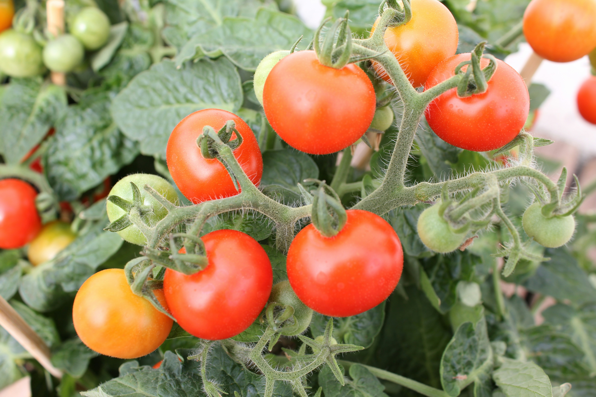
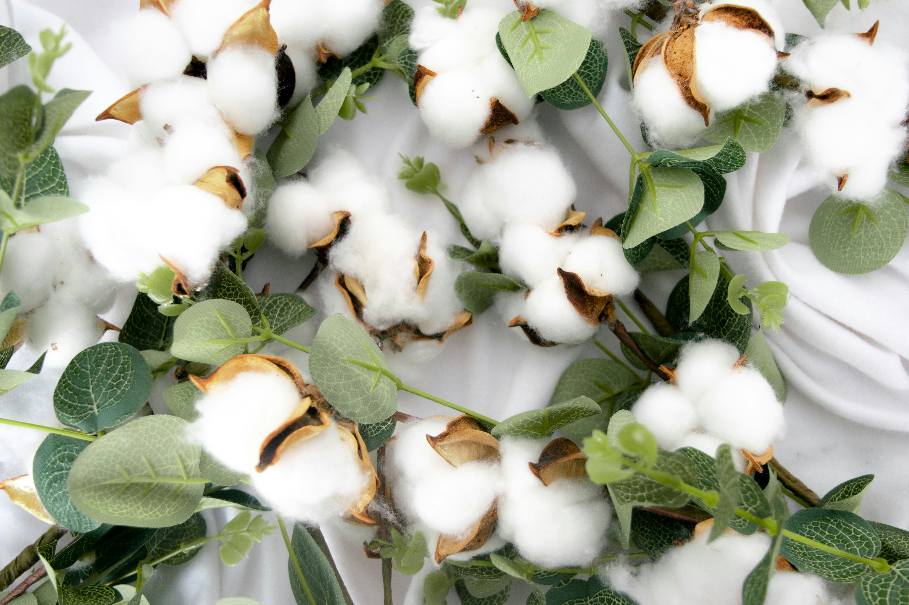

Rice (Oryza sativa)
Varieties: Basmati, Jasmine, Arborio.
Soil: Clayey or Loamy (Water Retentive).
Nutrition: High Carbohydrates, Vitamin B1.
Uses: Staple food, Flour, Rice Bran Oil.

Mango (Mangifera indica)
Varieties: Alphonso, Haden, Kent.
Soil: Well-drained Sandy Loam.
Nutrition: Vitamin A, C, and Fiber.
Uses: Fresh fruit, Juices, Pickles.

Tomato (Solanum lycopersicum)
Varieties: Cherry, Roma, Beefsteak.
Soil: Fertile, well-drained soil (pH 6.0-6.8).
Nutrition: Rich in Lycopene, Vitamin K, Folate.
Uses: Culinary base, salads, sauces, ketchup.

Cotton (Gossypium)
Varieties: Upland, Pima, Egyptian.
Soil: Deep, well-aerated saline-tolerant soil.
Nutrition: N/A (Non-edible fibrous crop).
Uses: Textile industry, cottonseed oil, paper.